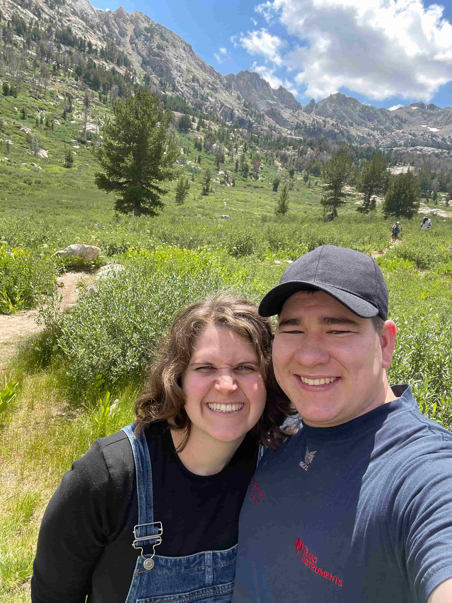

Home
About Me
My name is Sione Uhlig, and I’m from Wells, Nevada—a small town with a population of around 1,500. Growing up in such a small community, there isn't much to do other than outdoor activities, so I quickly fell in love with hiking, fishing, swimming, camping, and hunting. I met my wife in Dallas, Texas (the person on the left in the photo), and we have been married for almost three years. She shares my love of the outdoors, so whenever we get the chance, we enjoy spending time outside together.
Student Photo
Web Certifacate Courses
WDD 130
WDD 131
WDD 231
CSE 110
CSE 111
CSE 210
The total credits for courses listed above is 12
Courses marked in green are completed!